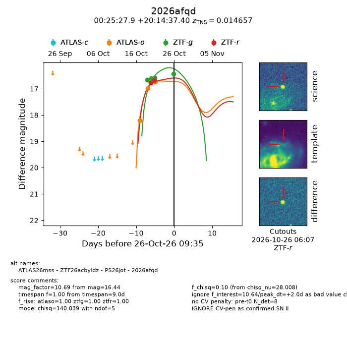
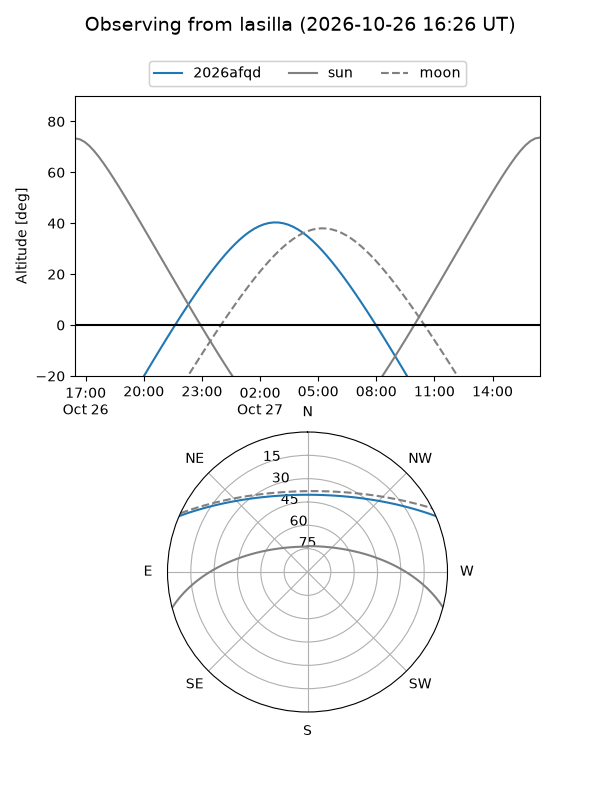
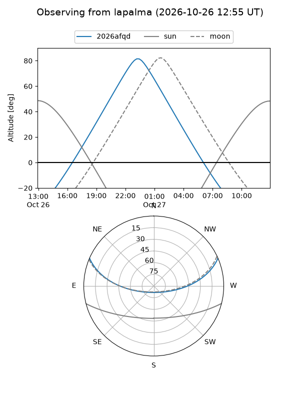
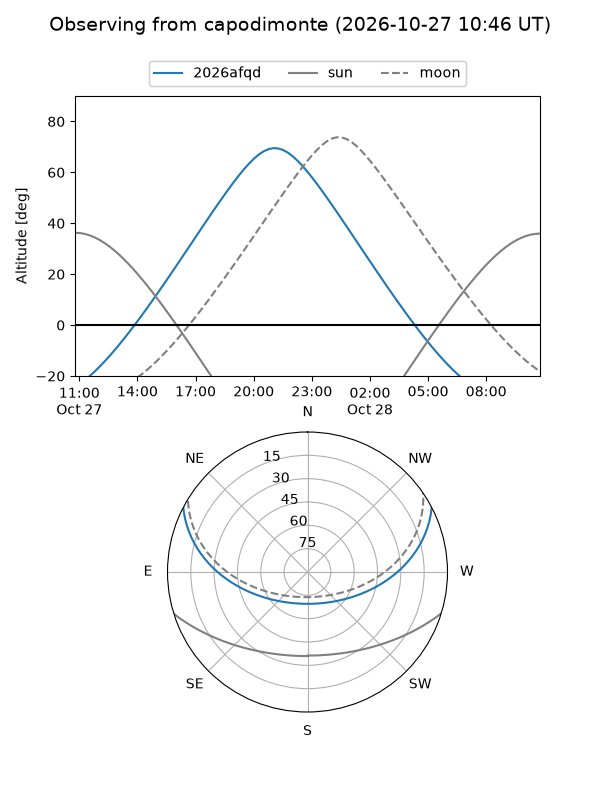
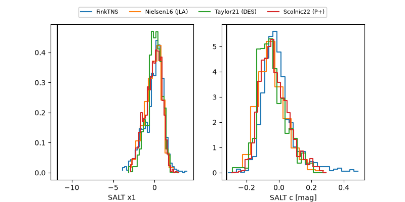

2026afqd
Target 2026afqd at 2026-10-26 09:36
Aliases and brokers:
FINK-ZTF: ztf.fink-portal.org/ZTF26acbyldz
Lasair-ZTF: lasair-ztf.lsst.ac.uk/objects/ZTF26acbyldz
ALeRCE-ZTF: alerce.online/object/ZTF26acbyldz
YSE-PZ: ziggy.ucolick.org/yse/transient_detail/2026afqd
TNS name: wis-tns.org/object/2026afqd
Direct TNS query: direct search
alt names
ZTF26acbyldz (ztf,fink_ztf)
2026afqd (tns,yse)
ATLAS26mss (atlas)
PS26jot (panstarrs)
Coordinates:
equatorial (ra, dec) = 6.3661,+20.24372
equatorial (HMS+DMS) = 00:25:27.86,+20:14:37.40
galactic (l, b) = (114.6957,-42.21227)
Flags:
TNS type: SN II
TNS redshift: 0.0147
peak dt: +2.0
Photometry:
last atlaso=16.73, ztfg=16.44, ztfr=16.69
3 atlaso, 4 ztfg, 2 ztfr detections
Lightcurve

Visibility



Additional plots
